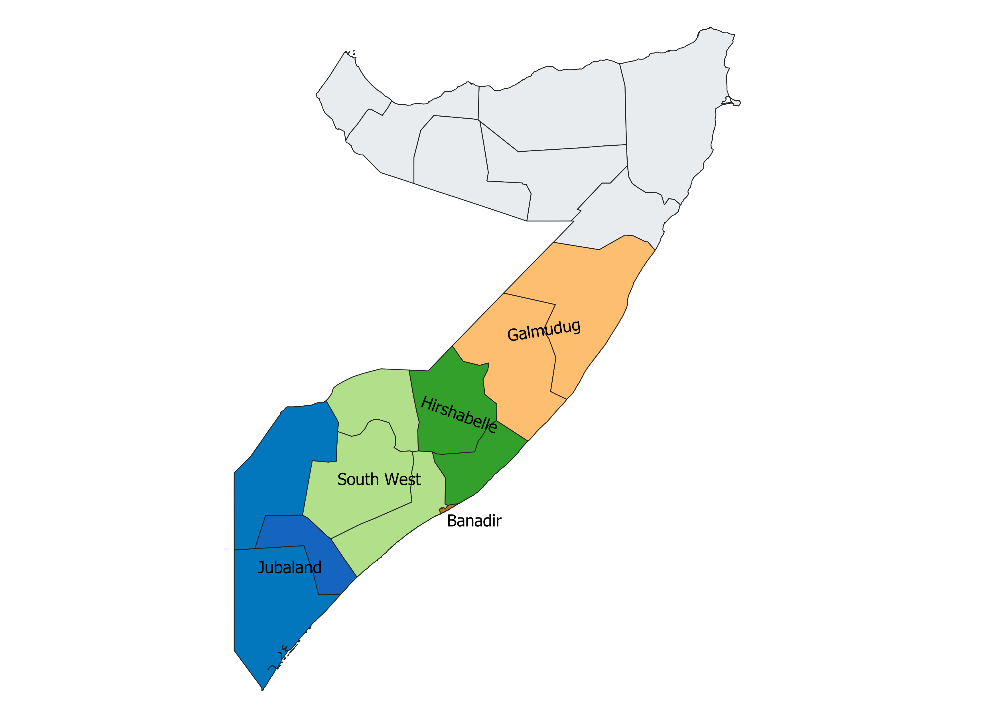

Third-Party Monitoring
Strengthen accountability and confidence in programme delivery through independent field monitoring, activity verification, beneficiary feedback, data quality assessments, and objective reporting.
Learn MoreSupporting organizations across Somalia through independent third-party monitoring, research and data analytics, IT and digital solutions, and capacity building.
Aragti Consulting is a Somalia-focused research, monitoring, and digital solutions consultancy. We help organizations navigate complex challenges through independent verification, reliable research, practical technology, and institutional capacity development.
Our approach combines analytical rigor, Somali contextual understanding, and a focus on practical outcomes—helping clients transform evidence into informed decisions and stronger programmes.
Discover Our ApproachFrom independent programme verification to research, digital innovation, and organizational development, Aragti offers complementary services designed to support better decisions and stronger performance.
Strengthen accountability and confidence in programme delivery through independent field monitoring, activity verification, beneficiary feedback, data quality assessments, and objective reporting.
Learn MoreMake informed decisions with dependable evidence. Our research and analytics services cover surveys, assessments, qualitative and quantitative research, data analysis, visualization, and actionable reporting.
Learn MoreImprove efficiency and information management with practical digital solutions, including website development, electronic data collection, dashboards, databases, and reporting automation.
Learn MoreBuild stronger teams and more effective systems through practical training, technical mentoring, research and data skills development, digital literacy, and institutional support.
Learn MoreAt Aragti Consulting, we believe reliable information, independent insights, and practical expertise are essential to effective programmes and stronger organizations. We bring together monitoring, research, digital solutions, and capacity development to help clients make confident decisions and pursue meaningful results.
Discover What Drives UsCredible monitoring, impartial analysis, and transparent reporting to support accountability and informed decisions.
Approaches shaped by Somalia's operating environments, local realities, and community perspectives.
A practical combination of research methods, data analytics, and digital tools to improve information and decision-making.
Actionable findings, responsive support, and knowledge transfer designed to create value beyond individual assignments.
Aragti Consulting offers research, monitoring, digital, and capacity development services for organizations seeking dependable evidence, stronger systems, and informed decisions.
Supporting donors, UN agencies, and local and international NGOs with independent third-party monitoring, research, data analytics, and digital solutions to strengthen accountability, programme effectiveness, and evidence-based decision-making.
Supporting ministries, government agencies, and public institutions with research, digital information systems, staff training, and evidence to inform planning and service delivery.
Helping companies and enterprises make informed business decisions through market research, data analytics, digital solutions, and practical technical support.
Supporting universities, research centers, and academic organizations with research design, data collection, statistical analysis, digital tools, and research capacity development.
Aragti Consulting focuses on supporting organizations working across Banadir, South-west, Hirshabelle, Jubaland and Galmudug states of Somalia.
Our context-sensitive approach connects independent monitoring, research, digital tools, and capacity development with the practical needs of organizations and communities.
Explore Our Coverage
Looking for a reliable partner in Somalia? Aragti Consulting provides independent monitoring, research, digital solutions, and capacity development to help your organization make informed decisions and achieve meaningful results.
Discuss Your Project